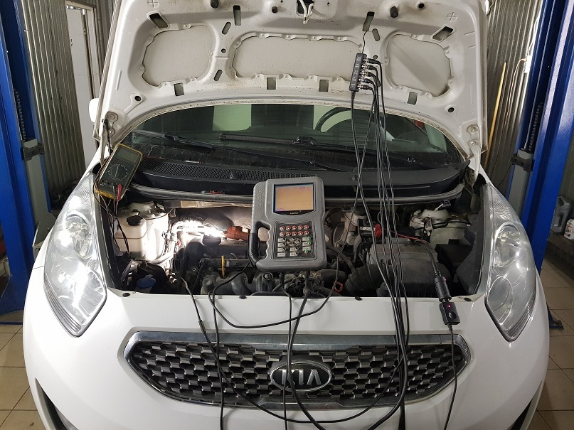
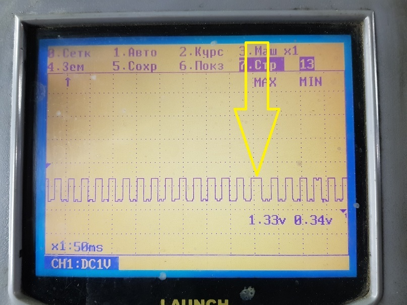
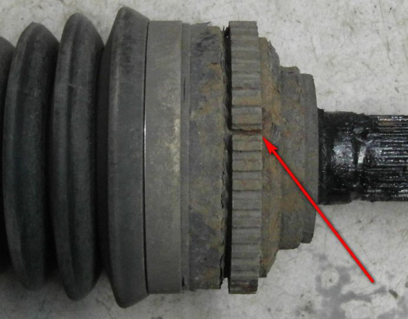

19.04.2019
К нам обратился клиент на а/м KIA VENGA 2011 г. выпуска с проблемой : на ходу ,около 100 км/ч , загорается контрольная лампа ABS и Трекшен контроль , а при перезапуске двигателя контрольные лампы гаснут как положено. Ещё , иногда , при торможении происходит ложное срабатывание системы ABS ( отрабатывает в педаль тормоза ). Посещение диллерского сервиса окозалось безуспешным... " У Вас всё в порядке " - стандартный ответ...
Компьютерная диагностика ( чтение ошишибок ) направила искать неисправность в сигнале от датчика вращения переднего правого колеса.И вполне логично , что диллер не нашёл причину неисправности , так как при сбросе ошибок неисправность не возникает пока не покатаешься на скорости 100 - 110 км/ч.
Решение вопроса причины неисправности ( тернист и труден путь диагноста ) - это проверка сигнала датчика вращения колеса с помощью " тяжёлой артилерии " - осциллографа .

Проверка в принципе несложная ( если уметь пользоваться прибором ):
При вращении колеса на осциллограмме видно , что среди одинаковых импульсов периодически появляется один более долгий импульс.

Для полноты картины было решено проверить заведомо исправный сигнал датчика вращения левого колеса:
Так как импульсы датчика повторяют зубцы цельно-металличесского кольца , которое напрессовано на шрус , то увеличенное расстояние между импульсами это не что иное , как разрыв кольца ! В заключении данных проверок можно сделать вывод , что зубчатое кольцо лопнуло и подлежит замене.
